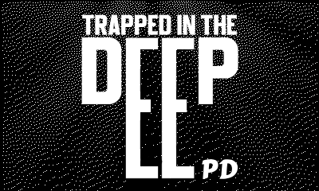
the project so far has had some is progressing well, although slower than I would have liked. Whenever progress has been slow it has been a result of the continued refinement of processes in production. For instance: to ensure enemies align on different environments the vanishing point should be consistent between different background renders.
To help convey the scale of the underwater lab and further the players progression I wanted to create a 3d low-poly map to be rendered in wire-frame. The wire-frame aesthetic acts both as technical necessity (due to the low computational power of the Playdate) and an artistic choice as this look is inspired by the map in the Metroid prime games. It would be possible to use a 3d library I found, however the performance is unacceptable to me (averaging 17-20 fps, the Playdate target 30 fps). As such I decided to build my own 3d wire-frame renderer using the Weak Plane Projection as explained by this video.
The renderer works by storing the object in a list of Vector3 positions. These points are 3D world positions, but we want to convert them to a 2D screen positions. To do this we can take the X and the Y coordinates and divide it by that points Z coordinate, as such the further away (larger the Z value) the closer to the vanishing point (0,0,0) the point is drawn to the screen. The default 0,0,0 position on the Playdate is the top left corner of the screen, as such we need to add 200,120 to the final out put to move the vanishing point to the centre of the screen. To move the map around we keep a new Vector3 to track the objects position, this is added to each point in the list before the projection is calculated (the same process is done but with rotation). After this we can use gfx.drawLine() to draw lines between these screen points thus creating the airframe.
--converting a 3d vector to a 2d Vector involves deviding the x and y coords by the z depth
for index, i in ipairs(vector3Array) do
-- handels rotation along the z then x axis
tempVector3Array[index] = NewVector3(vector3Array[index].x ,(vector3Array[index].y *cX) - (vector3Array[index].z * sX) , (vector3Array[index].y *sX) + (vector3Array[index].z * cX))
tempVector3Array[index] = NewVector3((tempVector3Array[index].x * cY) + (tempVector3Array[index].z * sY),tempVector3Array[index].y,(-tempVector3Array[index].x * sY) + (tempVector3Array[index].z * cY))
--converts 3d vectors into 2d screen positions for each vertex
cubeScreenPos[index] = NewVector2((tempVector3Array[index].x + mapPos.x) * scaleAmmount / (tempVector3Array[index].z + mapPos.z)+ 200,(tempVector3Array[index].y + mapPos.y) * scaleAmmount / (tempVector3Array[index].z + mapPos.z) + 120)
drawLines()
end
Above is the 3D -> 2D position formula, below is the proof of consept for the map system.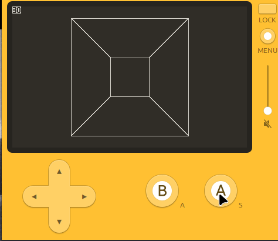
User interface for this project takes inspiration from other survival horror games, such as The Last of Us, Alan Wake 2, and Resident Evil. Other games of the survival horror genre such as the metro series and dead space serve as inspiration for game play but cant serve as inspiration for the IU elements, as these games feature diegetic UI (diegetic meaning it exists within the world of the game). While having maps and ammo counters exist as physical items in game would be interesting as a game design element, I believe that it would be too complex to implement well on the Playdates hardware. This is some what disappointing as many survival horror games minimise the ui elements, some time having the option to remove them entirely in order to create a more grounded and immersive experience or even forcing players to play without UI on the hardest difficulty. The map may be designed to be diegetic as the wire-frame graphics could be contextualised by it being displayed on a computer monitor similar to Alien Isolation.
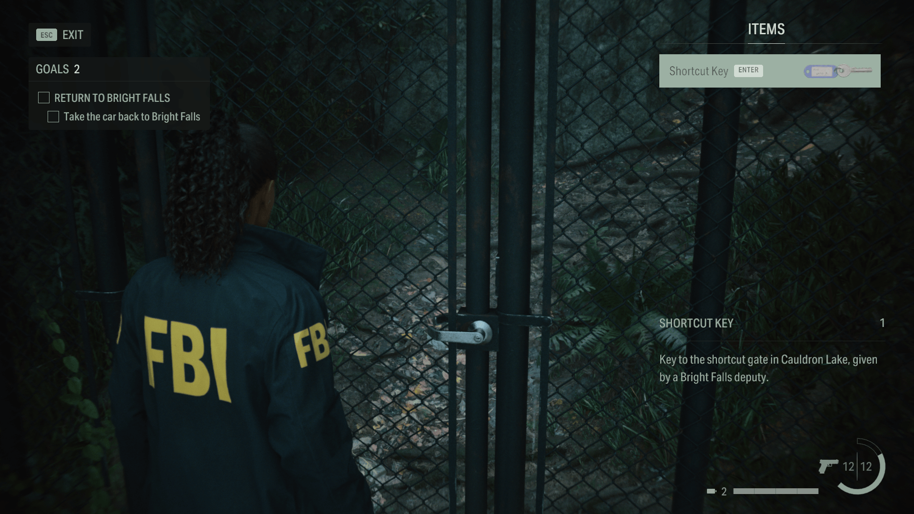
Alan Wake 2 UI. I like the clean solid white UI elements here.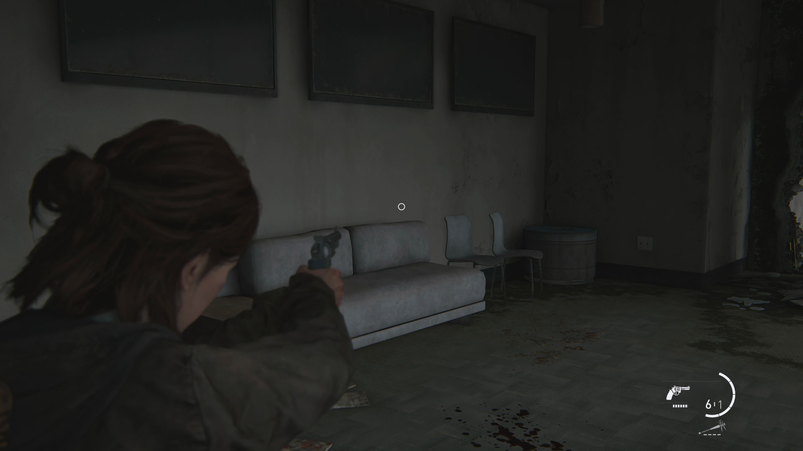
UI from The Last of Us part 2, note the segmented semi-circular health bar. also uses solid colored UI elements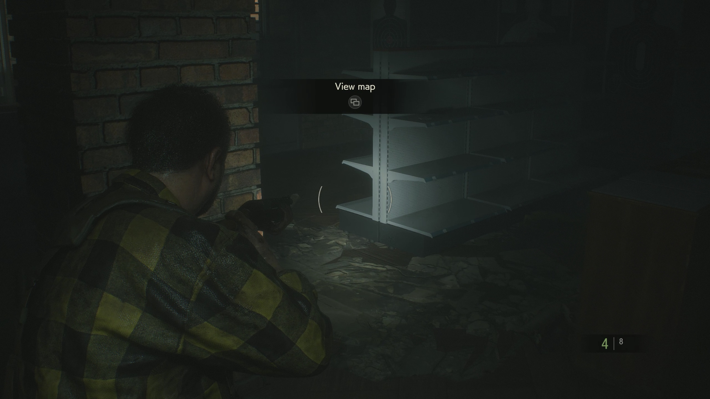
UI from Resident Evil 2 Remake. has a lack of a healthbar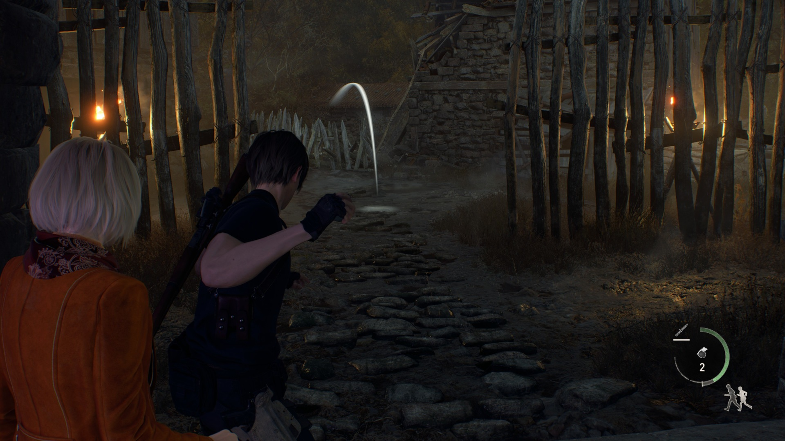
Resident Evil 4 UI, note the siliarities in ui layout compared to The Last of Us or Alan Wake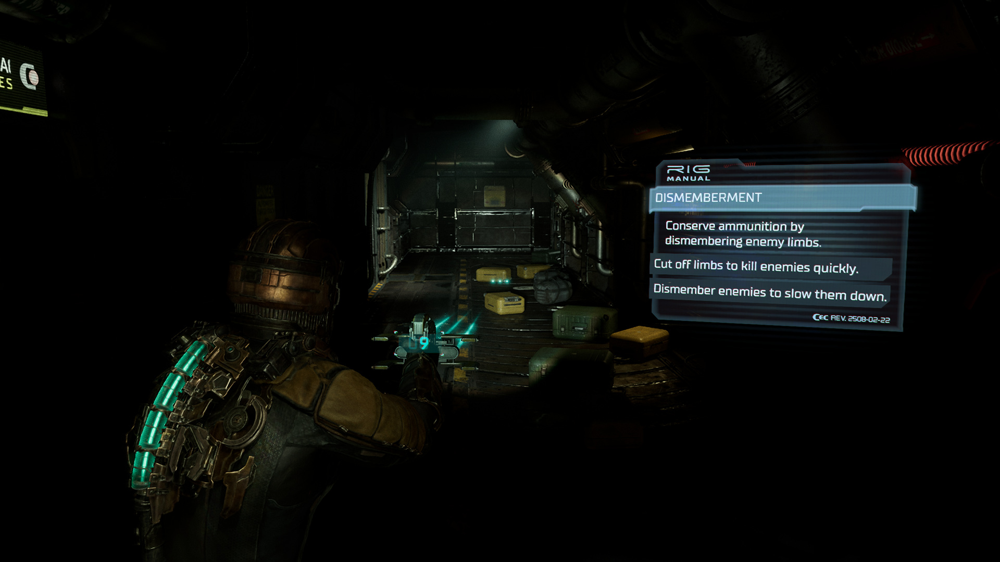
Dead Space UI is a great example of diegetic ui, see the health bar being displayed on the characters back or the ammo being displayed as a hologram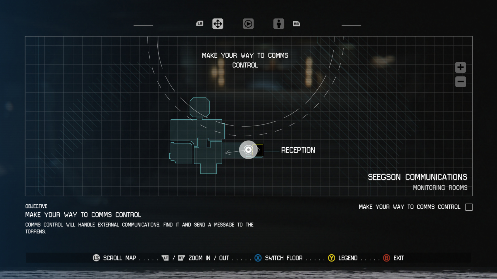
Alien: isolation map screen is designed to look like an in world computer monitor, i may take inspiration for this in my map screen.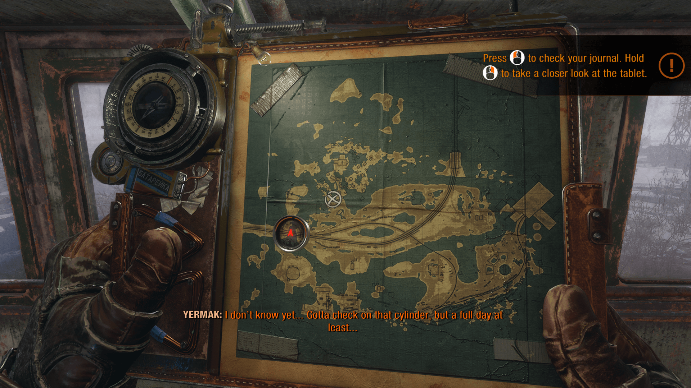
diegetic UI of Metro: Exodus. Like the Dead Space UI, this is too much detail for my art style.fillRect and drawRect functions. Due to these limitations I decided to use a segmented health bar like that seen in The Last of Us 2, as the image of the health bar sprite can just be changed out to display health.
fillRect and drawRect functions. An additional small box is located to the right side of the bar to represent the nub on the end of a type batteries, my goal was to make the bar look like a large long battery to better convey its meaning to players.
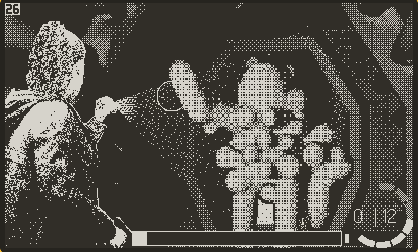
Combat is still the least developed element of the game, despite having UI the shooting functionality doesn’t even interact with sprites yet. Despite the lack of mechanical combat, a lot of time has been spent laying the ground work for the combat. The lighting system is nearly identical to it was in the previous update, however the threshold for when the lighting states are changed have been moved, closer together and all at the beginning to make the increasing light appear smoother. I want to look into blending between images to achieve an even smoother transition between states. If image blending is possible on the Playdate it may also mean that I can use less images, thus saving memory although it would most likely be at the cost of performance.
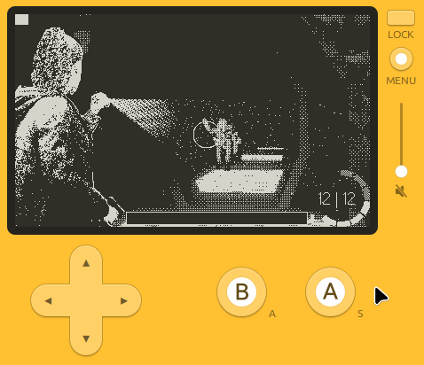
The biggest challenge so far in regards of environmental details is the integration of the enemy within the environment. Due to both environments and enemies just being sprites that slide around the screen it is difficult to match the motion and keep the two elements from drifting off one another in ways that look unnatural to players. I tried a few solutions but the one that I ended up settling on was to use the same 3D to 2D vector conversion as used in my map system, by storing the monsters position as a 3D vector, then dividing its x and y axis positions by its z or depth position I am able to achieve realistic movement within the pre-rendered environment. All that is needed to accurately track its position into the moving environment is to offset its position so that the (0,0) position that the sprite is moving towards as it gets further away is set to be that of the vanishing point of the pre-rendered hallway. This may require all future hallways to have the same vanishing point, alternatively, a new list containing vector coordinates for the vanishing points of each environments could be made. The scale of the monster is also defined by the z position of the 3D position vector. Scaling the monster has its own difficulties that may have to be resolved: due to the monster sprite being dithered using a Bayer-4x4 dither pattern, noticeable grid like artefacts are present when the image is scaled, this is unintentional and very distracting. To resolve this I may look into other dither patterns with less notable scaling artefacts.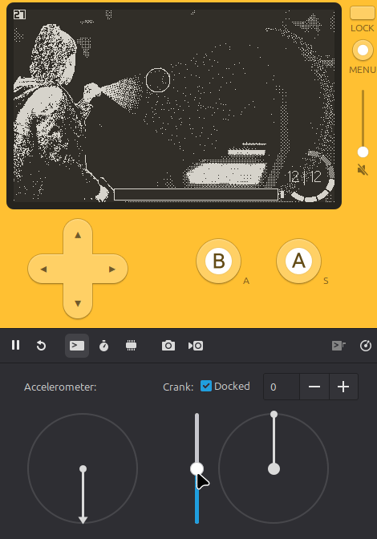
There is still a LOT of stuff that needs to be done for this project, improving existing mechanics, adding fully featured monster behaviour, ect. My next direct step is to start working on the 2d exploration using the pulp engine for Playdate.
Powered by w3.css